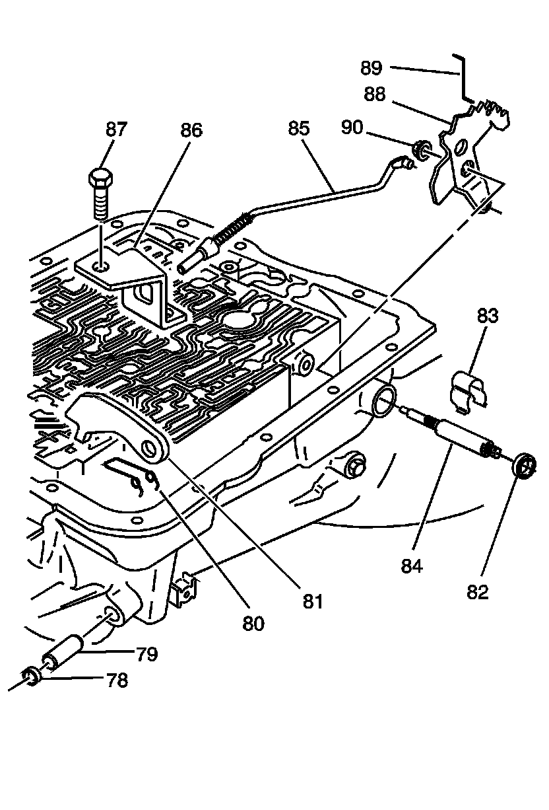

Parking Lock and Manual Shift Shaft Assembly
Disassembled Views
Parking Lock and Manual Shift Shaft Assembly:

78 - Steel Cup Plug
79 - Parking Brake Pawl Shaft
80 - Parking Pawl Return Spring
81 - Parking Brake Pawl
82 - Manual Shaft Seal
83 - Manual Shaft Retainer
84 - Manual Shaft - Model Dependent
85 - Parking Lock Actuator Assembly
86 - Parking Lock Bracket
87 - Parking Lock Bracket Bolt
88 - Inside Detent Lever
89 - Manual Valve Link
90 - Hex Head Nut